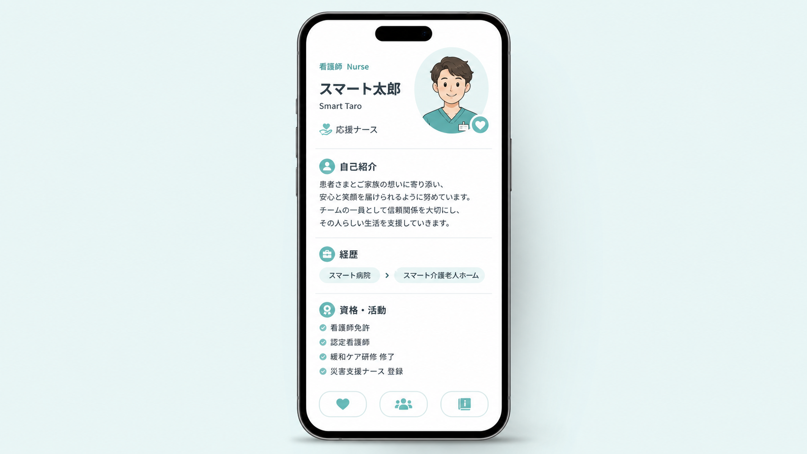

病棟で働いていると、看護師が自分の名刺を渡す機会はほとんどありません。私も以前は、「看護師に名刺は必要ない」と思っていました。
ところが、応援ナースとして勤務先が変わるたび、初出勤では自己紹介をし、新しい人間関係を一から築くことになります。学会、外部研修、勉強会、地域活動など、病院の外で看護師同士が出会う機会もあります。そんなとき、所属先だけでは伝えきれない経歴や活動を一つにまとめられるのがデジタル名刺です。
この記事では、私が実際に購入したNFC対応のデジタル名刺「Prairie Card（プレーリーカード）」を例に、看護師が持つメリット、活用場面、個人情報の注意点を紹介します。
デジタル名刺はすべての看護師に必須ではありません。一方、応援ナースのように勤務先が変わる人、外部研修や学会へ参加する人、複数の活動を持つ人には、自分を伝え、その後のつながりを残す道具になります。便利さより先に「誰に、何を見せるか」を決めることが大切です。
この記事には紹介リンクが含まれます。リンク先の利用状況によってSmart Nurse Labが紹介料等を受け取る場合があります。記事内容と評価は、実体験と確認できた公式情報を分けて記載しています。
Prairie Cardとは？決済用カードではなくデジタル名刺
Prairie Cardは、NFCを搭載したカードを対応スマートフォンへかざし、ブラウザ上のプロフィールページを表示するデジタル名刺です。クレジットカードや診察券ではありません。
受け取る側は専用アプリを入れる必要がなく、スマートフォンのブラウザでプロフィールを確認できます。氏名、連絡先、SNS、Webサイト、経歴、ポートフォリオ、動画などを掲載でき、内容は後から編集できます。NFCで読み取れないときは、QRコードやURLでも共有できます。
- 相手のスマートフォンへかざしてプロフィールを表示
- QRコードやURLでも共有可能
- SNS、ブログ、経歴、制作物などを一か所に集約
- 肩書きや勤務先が変わってもプロフィールを更新できる
- 個人向けカードは月額料金なし。購入後のプロフィール編集も無料
カードの種類、価格、送料、発送日数は変わる可能性があります。購入前にPrairie Card公式サイト で最新情報を確認してください。
看護師がデジタル名刺を持つ5つのメリット
1. 勤務先が変わっても同じ一枚を使える
応援ナースや派遣、非常勤などでは、勤務先や肩書きが変わるたびに紙名刺を作り直すのは現実的ではありません。デジタル名刺なら、プロフィールを書き換えて同じカードを使えます。
2. 紙に収まらない経歴や活動を伝えられる
看護師免許だけでなく、専門領域、研修歴、執筆、講師、ブログ、Podcastなど、伝えたい情報は人によって異なります。デジタル名刺は「どこに勤めているか」だけでなく、「何を経験し、何に関心がある看護師か」を伝えられます。
3. 自己紹介の続きを残せる
初対面の短い自己紹介ですべてを話すことはできません。プロフィールを共有すれば、相手が後から経歴や活動を確認できます。
4. SNSやブログを検索してもらう手間を減らせる
アカウント名を口頭で伝えて検索してもらうより、プロフィールから直接移動できる方がスムーズです。
5. 会話のきっかけになる
スマートフォンへカードをかざす体験そのものが、「これは何ですか？」という会話の入口になります。ただし、珍しさだけで終わらせず、相手にとって必要な情報を分かりやすく整えておくことが前提です。
応援ナースの初出勤で実際に使ってみた
私は応援ナースとして全国各地を回っていたとき、赴任先の初出勤で自己紹介をする場面にPrairie Cardを提示しました。
実際にスマートフォンへかざすと反応は瞬時で、プロフィールの表示までスムーズでした。操作は複雑ではなく、難しい初期設定もありませんでした。相手にアプリを入れてもらわなくてよい点も、初対面で使いやすいと感じた理由です。
一方、カードを見せるだけで良好な人間関係ができるわけではありません。自己紹介の主役は会話です。デジタル名刺は、短い挨拶では伝えきれなかった経歴や活動を、相手が興味を持ったときに見てもらう補助ツールとして使うのが自然でした。
初出勤での使用感は運営者個人の体験です。端末、設定、読み取り位置によって反応は異なります。外部研修での使い方は、次に紹介する活用提案であり、運営者が実際に研修で使用した体験ではありません。
外部研修や勉強会では、どう活用できる？
外部研修では、同じテーマに関心を持つ看護師と出会えます。自己紹介のときに長い経歴を話すのではなく、会話の最後に「よければ活動をまとめています」とプロフィールを共有する方法が考えられます。
- 最初は氏名、勤務領域、研修へ参加した理由を短く伝える
- 共通の関心が見つかったら会話を続ける
- 相手が希望した場合にNFC、QR、URLからプロフィールを共有する
- 帰宅後に、どこで会った人か分かる一言を添えて連絡する
研修資料、個人ブログ、講演歴、問い合わせ先などを一つにまとめておけば、紙名刺より多くの情報を渡せます。ただし、その場で無理に読み取ってもらったり、仕事用ではないSNSの交換を求めたりしない配慮も必要です。
海外ではデジタル名刺が当たり前？
海外でもNFC、QRコード、URL、スマートフォンのウォレットなどを使ったデジタル名刺サービスが提供されています。カンファレンス、展示会、営業、採用、フリーランスの交流などが代表的な利用場面です。
ただし、世界共通の普及率を示す公的統計は確認できませんでした。「海外では全員が使っている」とは言えません。
Ipsosが2024年に英国の16〜75歳1,089人へ行った調査では、デジタル名刺に関心がある人は全体の20％でした。16〜34歳では37％、35〜54歳では20％、55〜75歳では7％で、若い世代ほど関心が高い結果でした。
デジタル名刺は海外でも選択肢の一つとして広がっていますが、紙名刺を完全に置き換えたわけではありません。相手、世代、文化、通信環境に合わせた併用が現実的です。
また、公開検索で確認できた看護師によるPrairie Cardの詳しい事例はまだ多くありません。だからこそ、看護師全員に勧めるのではなく、勤務先が変わる人や院外活動をする人に合うかを具体的に考える必要があります。
紙名刺、QRコード、NFCカードはどう使い分ける？
| 方法 | 便利な点 | 気になる点 |
|---|---|---|
| 紙名刺 | 端末や通信が不要。手元に物として残る | 情報量が限られ、変更時は刷り直しが必要 |
| スマホでQR表示 | カードを購入せず始められ、URLを共有できる | その場で画面を開く操作が必要 |
| NFCデジタル名刺 | カードをかざしてプロフィールへ案内できる | 端末や設定、かざす位置で反応が異なる |
| URL共有 | オンライン会議、メール、SNSでも送れる | 対面時の自己紹介では入力や送信の手間がある |
どれか一つを正解にする必要はありません。NFCが反応しないときのためにQRコードを準備し、相手が紙を好む場面では紙名刺を使うなど、複数の手段を持っておくと安心です。
看護師のプロフィールには何を載せる？
デジタル名刺は紙より多くの情報を載せられます。しかし、載せられる情報をすべて公開する必要はありません。
載せやすい情報
- 氏名または活動名
- 看護師であることと、関心のある領域
- 公開して差し支えない範囲の経歴
- 仕事用のメールアドレスや問い合わせフォーム
- 仕事用SNS、ブログ、執筆・講演・制作物
慎重に考えたい情報
- 自宅住所や個人の電話番号
- 現在の勤務先、配属先、勤務予定
- プライベートだけで使っているSNS
- 免許証や資格証の番号・画像
- 患者・利用者、同僚、院内の出来事が推測できる情報

便利な一方、個人情報と専門職の境界に注意
プロフィールURLは、一度共有されると別の人へ転送されたり、SNSへ貼られたりする可能性があります。「目の前の一人だけに見せる画面」ではなく、インターネット上で第三者が見る可能性を前提に整えましょう。
日本看護協会の「看護職の倫理綱領」は、看護職が対象となる人々の秘密を保持し、取得した個人情報を適正に取り扱うこと、業務上の利用と私的な利用を区別することを示しています。デジタル名刺へ患者・利用者情報を載せないのはもちろん、リンク先のブログやSNSにも個人を推測できる情報を残さない確認が必要です。
- 勤務先名や制服の公開は、就業規則とSNS規定を確認する
- 患者・利用者へ個人SNSや私的連絡先を渡す用途にはしない
- 仕事用と私用のSNSを分けるか検討する
- 紛失時や使わなくなったときの編集・停止方法を確認する
- カード本体だけでなく、リンク先の公開範囲も定期的に見直す
- NFCで反応しない場合に備え、QRコードやURLも使えるようにする
「デジタルだから安全」「NFCなら必ず一度で読める」とは限りません。便利さと公開範囲をセットで考えることが大切です。
こんな看護師には合いそう／急いで買わなくてもよさそう
- 応援ナースなどで勤務先が変わる
- 学会、外部研修、交流会へ参加する
- 執筆、講師、SNSなど複数の活動がある
- 経歴やリンクを一か所にまとめたい
- 院外で自己紹介する機会がほとんどない
- 紙名刺やスマホのQR表示で十分
- 公開したい仕事用プロフィールがない
- 個人情報の公開範囲をまだ決められない
名刺交換の機会が少ないなら、まず無料で作れるプロフィールページやQRコードを試してもよいでしょう。「カードを買うこと」ではなく、「自己紹介の後に何を伝えたいか」から考えると、自分に必要か判断しやすくなります。
Smart Nurse LabのおすすめアイテムページでもPrairie Cardを紹介しています。実際のプロフィール例は、商品カードの外部リンクから確認できます。
まとめ：所属先だけでは伝わらない自分を一枚に
看護師にデジタル名刺が必要かどうかは、働き方と人に会う機会によって変わります。病棟内だけで働き、院外で自己紹介することがほとんどなければ、急いで用意する必要はありません。
一方、応援ナースとして勤務先が変わる人、外部研修や学会へ参加する人、執筆や講師など複数の活動を持つ人には、経歴と発信を一つにまとめる道具になります。私自身、赴任先の初出勤で使ったときは読み取りが速く、操作もスムーズでした。
大切なのは、情報をたくさん載せることではありません。誰に何を見せるのかを決め、患者・利用者情報、勤務先規定、私生活との境界を守ること。その準備ができたとき、Prairie Cardは看護師の新しい自己紹介を支える一枚になります。
参考資料・出典
- Prairie Card公式サイト
- Prairie Card：NFC名刺／カスタムデザイン・FAQ
- Prairie Card：活用事例一覧
- Ipsos：The death of the Business Card?
- 日本看護協会：看護職の倫理綱領
- 日本看護協会：個人に関する情報と倫理
本記事は2026年7月18日時点で確認できる情報と、運営者個人の使用経験をもとに作成しています。価格、対応端末、サービス内容などは変更される可能性があります。購入前には公式サイトで最新情報をご確認ください。生成画像に登場する人物・施設・プロフィール画面はイメージであり、実在する人物・勤務先・Prairie Cardの実画面ではありません。